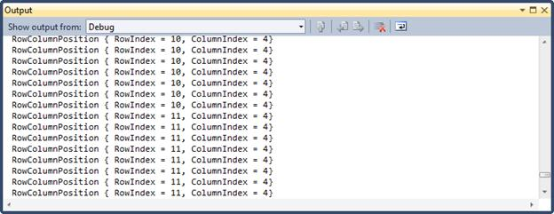

The PointToCellRowColumnIndexOutsideCells method enables you to obtain column index and row index of a cell when the mouse pointer traverses over the GridDataControl. The following code example illustrates how to determine the column and row indexes of the cell.
[C#] void GridDataControl1_MouseMove(object sender, MouseEventArgs e) {var RowColumnIndex = GridDataControl1.Model.Grid.PointToCellRowC olumnIndexOutsideCells(Mouse.GetPosition(this), true); Console.WriteLine(RowColumnIndex); }
|
The following screen shot shows the output for the above code in the GridDataControl.

Figure 277: RowColumnPosition